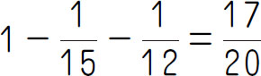
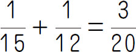
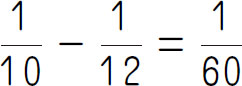
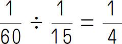
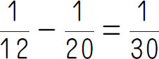
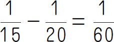
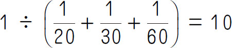
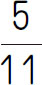
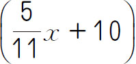
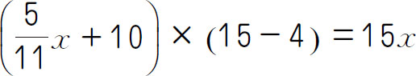

后，乙工程队再接着修完余下的公路，共用40天完成．已知乙工程队每天比甲工程队多修8千米，后20天比前20天多修了120千米．求：乙工程队共修路多少天？
后，乙工程队再接着修完余下的公路，共用40天完成．已知乙工程队每天比甲工程队多修8千米，后20天比前20天多修了120千米．求：乙工程队共修路多少天？工程问题是小学数学应用题教学中的重点，是分数应用题的引申与补充，是培养学生抽象逻辑思维能力的重要工具．它是一一对应思想在应用题中的有力渗透．工程问题也是教材的难点．工程问题常把工作总量看成单位“1”，它具有抽象性，所以认知起来比较困难．
【解题技巧】
工程问题是指用分数来解答有关工作总量、工作时间和工作效率之间相互关系的问题．工作总量一般被抽象成单位“1”，工作效率为单位时间内完成的工作量．
【基本公式】
工作总量＝工作效率×工作时间
工作效率＝工作总量÷工作时间
工作时间＝工作总量÷工作效率
（第六届“希望杯”初赛）一项工程，甲单独完成需12小时，乙单独完成需15小时．甲和乙合做1小时后，由甲单独做1小时，再由乙单独做1小时……如此交替下去，则完成该工程共用___小时．
【答案】 12.25．
【解析】 甲、乙合做1小时后，还剩下

工程没有做，甲、乙单独做2小时，共做
，还需要做5个 ，即2×5＝10（小时），还剩下 ，需要甲做1小时，还有
，乙还需要做
（小时），一共需要1＋10＋1＋0.25＝12.25（小时）．【举一反三1】
一件工程，甲单独做要6小时，乙单独做要10小时，如果按甲、乙、甲、乙……顺序交替工作，每次1小时，那么需要多长时间完成？
（2009年“学而思杯”）放满一个水池，如果同时打开1号、2号阀门，则12分钟可以完成；如果同时打开1号、3号阀门，则15分钟可以完成；如果单独打开1号阀门，则20分钟可以完成；那么，如果同时打开1号，2号，3号阀门，_____分钟可以完成．
【答案】 10．
【解析】 单独打开1号门，20分钟可以完成，说明1号门每分钟完成 ，而同时打开1号、2号阀门12分钟可以完成，说明2号阀门每分钟完成

，而现在同时打开1号、3号阀门，15分钟可以完成，说明3号阀门每分钟完成
，则同时打开1号、2号、3号阀门需要
（分钟）．【举一反三2】
甲、乙两个进水管单独开，注满一池水，分别需要20小时、16小时．丙出水管单独开，排完一池水要10小时，若水池没水，同时打开甲、乙两水管，5小时后，再打开出水管丙，问：水池注满需要多少小时？
（第七届“希望杯”初赛）工厂生产一批产品，原计划15天完成，实际生产时改进了生产工艺，每天生产产品的数量比原计划每天生产产品数量的

多10件，结果提前4天完成了生产任务，则这批产品有___件．【答案】 165．
【解析】 设原计划每天生产产品x 件，则这批产品有15x 件，实际生产时每天生产

件，实际用（15-4）天完成生产任务.根据题意，列方程得
．解方程，得x ＝11．所以这批产品有15×11＝165（件）．【举一反三3】
甲、乙两车间生产同一种零件，若按4∶1向甲、乙车间分配生产任务，这两个车间能同时完成任务．实际生产时，乙车间每天生产15个零件，由于甲车间抽调一部分工人去完成另外的任务，实际每天生产50个零件．若干天后，乙车间完成了任务，甲车间还剩一部分未完成，这时，甲、乙两车间合作，2天后全部完成.问：这批零件有多少个？
（第三届“希望杯”决赛）光明村计划修一条公路，由甲、乙两个工程队共同承包，甲工程队先修完公路的
后，乙工程队再接着修完余下的公路，共用40天完成．已知乙工程队每天比甲工程队多修8千米，后20天比前20天多修了120千米．求：乙工程队共修路多少天？
【答案】 15天．
【解析】 由题意知，甲、乙两个工程队均修公路的 ，且乙工程队每天比甲工程队多修8千米，所以甲工程队比乙工程队修公路的时间长，而甲、乙两个工程队修完公路共用40天，所以前20天中只有甲工程队修公路，而后20天中，甲工程队先修了若干天，乙工程队接着修完余下的公路．因为甲工程队修路速度不变，而乙工程队每天比甲工程队多修8千米．又后20天比前20天多修了120千米，所以乙工程队共修路120÷8＝15（天）．
【举一反三4】
某工程先由甲单独做63天，再由乙单独做28天即可完成，如果由甲、乙两人合作，需要48天完成，现在甲先单独做42天，然后再由乙单独完成，那么还需要做多少天？
1．修一条水渠，单独修，甲队需要20天完成，乙队需要30天完成．如果两队合作，由于彼此施工有影响，他们的工作效率就要降低，甲队的工作效率是原来的 ，乙队的工作效率只有原来的 ．现在计划16天修完这条水渠，且要求两队合作的天数尽可能少，那么两队要合作几天？
2．一件工作，甲、乙合作需4小时完成，乙、丙合作需5小时完成．现在先请甲、丙合作2小时后，余下的乙还需做6小时完成．乙单独做完这件工作要多少小时？
3．一项工程，第一天甲做，第二天乙做，第三天甲做，第四天乙做……这样交替轮流做，那么恰好用整数天完工．如果第一天乙做，第二天甲做，第三天乙做，第四天甲做……这样交替轮流做，那么完工时间要比前一种方式多半天．已知乙单独做这项工程需17天完成，那么甲单独做这项工程要多少天完成？
4．师徒两人加工同样多的零件．当师傅完成了 时，徒弟完成了120个.当师傅完成了任务时，徒弟完成了 ，这批零件共有多少个？
5．一批树苗，如果分给男女生栽，平均每人栽6棵；如果单分给女生栽，平均每人栽10棵．单分给男生栽，平均每人栽几棵？
6．一个池上装有3根水管．甲管为进水管，乙管为出水管．只用乙管，20分钟可将满池水放完；丙管也是出水管，只用丙管，30分钟可将满池水放完．现在先打开甲管，当水池水刚溢出时，打开乙、丙两管，用了18分钟放完．当打开甲管注满水时，再打开乙管，而不开丙管，多少分钟将水放完？
7．某工程需要在规定日期内完成，若由甲队去做，恰好如期完成，若由乙队去做，要超过规定日期三天完成，若先由甲、乙合作两天，再由乙队单独做，恰好如期完成．问：规定日期为几天？
8．两根同样长的蜡烛，点完一根粗蜡烛要2小时，而点完一根细蜡烛要1小时，一天晚上停电，小芳同时点燃了这两根蜡烛看书，若干分钟后来电了，小芳将两支蜡烛同时熄灭，发现粗蜡烛的长是细蜡烛的2倍，问：停电多少分钟？
9．一份文件，如果甲抄10小时，乙抄10小时可以抄完；如果甲抄8小时，乙抄13小时也可以抄完．现在甲先抄2小时，剩下的甲、乙合作，还需要几小时？
10．我们规定两人轮流做一个工程是指第一个人先做一个小时，第二个人再做一个小时，然后再由第一个人做一小时……以此类推，做完为止．如果甲、乙轮流做一个工程需要9.8小时，乙、甲轮流做只需要9.6小时，那么乙单独做这个工程需要多少小时？